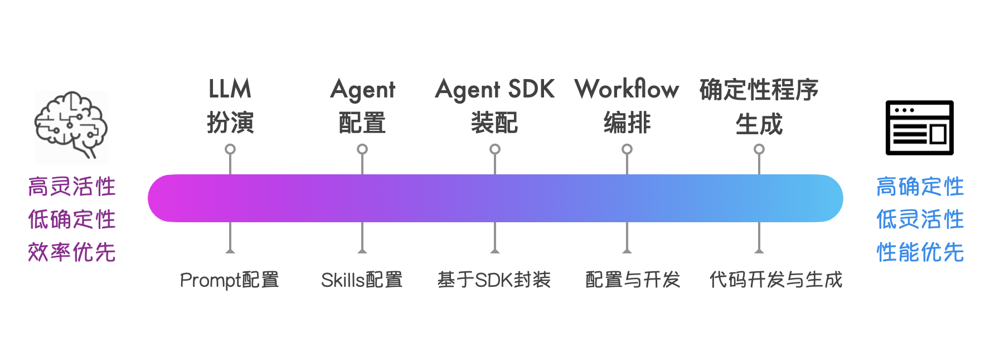

AI Agent 时代的软件技术栈选型：从 "扮演" 到 "生成"
AI Agent 的兴起，让工具软件的技术栈选型变得逐渐多元化。过去开发一个工具，技术栈选型主要聚焦于用什么语言、什么框架、什么数据库。而现在思考的角度变了：是让通用 Agent 直接 "扮演" 这个工具？还是基于 Agent SDK 开发定制化的 Agent 代理？还是开发或生成确定性 APP？又或者，把这几种方案混合使用？
这些选择并非非此即彼，而是构成了一个技术栈选型的 "光谱"。这个光谱反映了 AI 时代软件开发技术栈的结构关系和平衡策略。
技术栈光谱
把当前可用的技术方案按照从 "灵活性" 到 "确定性" 从左到右进行排列，大致可以分成如下几个主要分界点：

1：让 LLM "扮演"
最轻量的方案是直接通过精心设计的 Prompt，让通用大语言模型临时扮演特定角色。这不需要写任何代码，只需要设计好系统提示词。有点像请一个什么角色都能演的 "天王级演员"：今天演科学家，明天演艺术家，一个人撑起整台戏。
一个经典的例子是 Mr.-Ranedeer-AI-Tutor，它通过复杂的 Prompt 工程，让 ChatGPT 扮演一个可定制的 AI 家教。用户可以选择学习风格、深度、语气，AI 就按照设定来教学。此外，李继刚通过 Prompt 技巧让 Claude 生成的各种有趣的即时网页应用，也颇为流行。
虽然这种 "扮演" 能力目前能覆盖的软件范围有限，但随着 LLM 能力的持续提升，这种方式会越来越强大，能够胜任越来越复杂的任务。
这种方案的优势是开发成本极低、即时可用、非常灵活。想改变行为？改 Prompt 就行。缺点也很明显：行为不可完全预测，受限于模型的上下文窗口，每次对话都需要重新 "进入角色"，而且推理成本不菲 —— 天王级演员的片酬从来不便宜。
2：配置通用 Agent "扮演"
进一步的方案是在通用 Agent（比如 Claude Code）的基础上进行配置和扩展。通过定制系统提示词、设置项目级的规则、配置专用工具集和 Skills，把通用 Agent "改造" 成一个领域 APP。
这其实是很多人使用 Claude Code 的方式：在项目的 .claude/ 目录下放置配置文件，定义 skills 和 commands，让 Claude Code 能够胜任某些领域的特殊需求。
配置化扮演的威力比很多人想象的要大。举个例子，你完全可以通过配置 Claude Code，定制出各种 CLI 应用：比如一个发票助手，有自己的子命令、技能和规则。用户在终端里输入 /invoice scan，Agent 就知道要扫描当前目录的发票图片并提取信息。这类应用基本都可以由通用 Agent "扮演" 出来，几乎不需要写代码（除了 Skill 中的胶水代码）。
更值得关注的是 GUI 应用的扮演潜力。当 Google 的 A2UI（Agent-to-UI）这类技术成熟后，通用 Agent 将能够直接生成并操作图形界面，扮演各种 GUI 应用。至少在原型验证阶段，很多工具型应用都可以采用这种方案：不是开发一个 App，而是让 Agent 扮演一个 App。
3：基于动态 Agent SDK 开发
当配置已经无法满足需求时，下一步是通过封装 Agent SDK 构建一个专用 Agent。Dogent 就处于这个层级。
这种方案往往适合以下场景：需要定制化的系统提示词、定制化的交互方式和 UI 界面、自定义的内置工具集，以及需要与其它工具和系统进行深度集成的情况。
Claude Agent SDK 属于这类动态 Agent SDK。它提供了 Agent 的核心能力：LLM API 对接、工具使用、对话管理、上下文维护，但把系统提示词、交互方式、工具集成都开放给开发者定制。
这个层级的特点是面向领域定制的 "动态规划"：Agent 可以根据领域特点更精细地进行决策和执行。这种定制能力对于体验敏感的任务（比如写作、设计）以及深度集成的系统（比如 CI/CD）特别重要。代价是开发成本：你需要写代码、需要理解 SDK 的工作方式、需要持续维护。
4：静态编排类 Agent
如果任务的流程相对固定，可以用静态工作流来替代动态规划。字节的 COZE 平台、LangGraph 等都是这种思路：预先定义好执行步骤和分支条件，Agent 按图索骥地执行，在特定阶段按需调用 AI 的能力。
这种方案的确定性更高，更容易审计和调试，但灵活性受限 —— 如果任务超出预设的流程，系统要么无法处理，要么需要人工介入。
5：传统确定性程序
光谱的另一端是完全没有 AI 参与的传统软件，所有逻辑都是确定性的，用代码硬编码。这就像建一条生产流水线：预先设计好每个环节，让每个工序只负责一个固定动作。前期投入大，但一旦跑起来，效率高、成本可控、质量稳定。
这并非一个过时的选项。当需求完全明确、规则完全固定、对性能和稳定性要求极高时，传统程序仍然是最优解。不过，这类程序未来会逐渐变成 AI Agent 的手和脚，帮 Agent 执行那些确定性强、重复性高的阶段任务。
开发效率与性能成本之间的权衡
上述技术栈选型谱系应该是一个连续谱系，所谓的分界点只是标注了一些典型的技术栈选型，它们中间可以有很多过渡形态的技术选型。
光谱左边是 "开发效率优先"。零代码、即时可用、快速迭代。想验证一个新想法？让 Agent 扮演一下就知道行不行。修改需求？改几行配置就生效。这种模式特别适合原型验证、低频使用、快速实验的场景。
光谱右边是 "性能与成本优先"。前期投入开发成本，换来 "极致" 的性能与成本：响应时间可预测，资源消耗可控制，更好的稳定性和可控性。这种模式适合高频使用、关键路径、行为确定性场景。
中间的阶段则是各种折中。动态 Agent SDK 牺牲一些开发效率换取更多定制空间；静态编排 Agent SDK 牺牲一些灵活性换取更多确定性。
不过值得注意的是，随着模型和动态 Agent SDK 能力的增强，这个光谱的左边变得前所未有的强大。目前必须 "开发" 的功能，未来逐步都可以用 "扮演" 来解决。
这并不意味着右边的技术方案会消失 —— 恰恰相反，当 "扮演" 变得足够便宜时，"开发" 的门槛反而会提高：只有那些真正需要极致体验、性能、确定性的场景，才值得投入开发成本。
软件的技术选型，最终是一个体验、效率与性能成本的综合考量，优秀的系统往往在光谱两端之间找到恰当的平衡点。
快速原型与渐进式固化
AI Agent 的 "扮演" 能力，让快速原型变得更加容易，使需求验证和价值确认可以先行，真正有价值的功能再投入开发 —— 这让软件开发更加敏捷和精益。
当新想法刚出现时，先用最灵活的方式验证，在光谱上从左往右找到最合适的起点，经过原型验证后，再根据需求的稳定性和使用频率，逐步向右移动。
例如在概念验证阶段，可以从配置通用 Agent 开始，通过定制规则、设置工具和技能，验证核心概念是否成立、目标用户是否接受。
如果某些功能变得足够稳定和高频，可以把它们从动态 Agent 中抽离出来，做成静态流程甚至传统代码，进一步提高性能和可靠性。
整个过程的关键在于：AI Agent 让想法更快地得到反馈和闭环。先用最快的方式验证想法，再根据实际情况决定要不要向右移动、移动到哪里。
以前我们开玩笑说 "好的软件就得做两遍"，现在有了 AI Agent，做两遍的成本大大降低了。甚至一上来就该抱着做两遍的心态：第一遍使用 AI Agent "扮演" 进行快速原型验证，等到核心逻辑跑通、价值点被验证成立，再进行第二遍工程化落地，决策最终的技术架构和性能成本。
Dogent 的技术栈选型位置
回到 Dogent 的技术选型。为什么不直接配置 Claude Code（分界点 2），也不做成静态工作流（分界点 4），而是选择基于 Claude Agent SDK 开发（分界点 3）？
配置 Claude Code 的问题在于：写作场景需要的定制程度超出了配置能提供的范围。系统提示词不能完全控制，交互方式（比如大纲编辑器）无法定制，工具集成（比如 PDF 生成、自定义视觉分析）不够深入。
静态工作流的问题在于：写作是创造性活动，流程无法预先确定。用户可能随时改变文章结构、插入新素材、调整论证逻辑。这不是一个可以画成流程图的任务。
因此，动态 Agent SDK 成了合适的选择。它提供了足够的定制空间，又保留了处理不确定性的能力。开发成本介于 "配置" 和 "从零开发" 之间，对于一个需要持续迭代的写作工具来说，是一个恰当的平衡点。
复杂系统软件：从确定性架构走向混合架构
实际的复杂系统通常不会只停留在光谱的某一点，而是在不同模块采用不同层级的方案，这是务实的平衡策略。
以一个典型的企业级 AI 应用为例：用户交互层可能采用动态 Agent SDK（分界点 3），因为用户需求千变万化，需要灵活应对；数据处理管道则是静态工作流（分界点 4），确保 ETL 流程的可预测性和可审计性；核心业务规则用传统代码硬编码（分界点 5），保证关键路径的性能和稳定性；而一些边缘功能，比如智能客服的话术优化，可能直接复用通用 Agent 的能力（分界点 2），省去专门开发的成本。
这种混合架构的设计原则是：在正确的地方使用正确的技术。需要创造性和灵活性的地方，用光谱左边的方案；需要确定性和高性能的地方，用光谱右边的方案。关键路径要稳，边缘场景要灵。
即使对于嵌入式设备，未来我相信也会普遍内置一个低资源消耗的 Agent 引擎加一个嵌入式模型推理引擎，这可能会成为软件平台的标配。
AI Agent（SDK）的出现，让技术选型的空间变得更加丰富 —— 我们有了更多的选择，也需要更精细的判断。